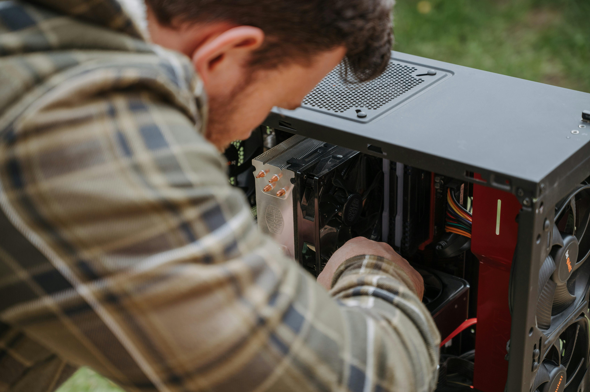

Green Bytes: Build Your Own Computer
Select a module from the left margin to begin.
I. Introduction and Purpose
-
Environmental Stewardship
We prioritize used, renewed and refurbished hardware over new equipment.
-
Building a Refurbished PC

We'll learn all that goes into assembling and configuring a PC from its core hardware components.
II. Computer Hardware Overview
Essential Hardware
You can't have a PC (personal computer) without these essential parts:
Set Up Items | Peripherals
Peripherals allow the user to give input to the PC and receive output from the PC.
Expansion Components
These hardware components add features to make a PC more powerful.
III. Hardware Compatibility
Quick Guide — The Big Picture
Short, easy checks to make sure parts will work together.
- CPU & board: Make sure the CPU fits the board like matching puzzle pieces. You must have an exact matching socket.
- Memory (RAM): Make sure the RAM type (DDR3 / DDR4 / DDR5) matches the board and there is space for it.
- Power: Make sure the power supply has enough power and the right plugs for your parts.
- Size: Make sure big parts like the graphics card and cooler fit inside the case.
- Drives: Make sure the board has places for your hard drives or SSDs.
- Cooling: Make sure there is room for fans and air to move around the parts.
What to do if you're not sure
There are many guides and parts-checkers online (click here to check compatibility at PCHardware.org)
IV. Resourcing Equipment: New vs. Used
When you plan to build your own PC, there is a choice to use new hardware or used/refurbished components (or a combination). Both choices can work. This section explains more.
Quick answer
- New parts — may be easier to use, may come with a warranty, and have the newest features.
- Used parts — much cheaper, far more eco-friendly, and often have enough features to last for years into the future.
Why people pick new parts
- They usually work right away.
- Most new parts include a manufacturer warranty.
- You get current features like faster speeds and newer ports.
- Less time needed for testing and troubleshooting.
- Easier to ensure compatibility
Why people pick used parts
- Used parts are cheaper, so you can build systems on a much smaller budget.
- Reusing parts helps the environment by keeping electronics out of landfills.
- Local reuse groups and volunteers may donate parts.
- Users get more experience with troubleshooting and repair skills.
Pros and cons at a glance
New parts
- Pros: Reliable, warranty, up-to-date specs.
- Cons: More expensive, higher manufacturing impact on the environment.
Used parts
- Pros: Lower cost, eco-friendly, great for hands-on learning.
- Cons: Often sold "as-is", may fail, may need cleaning or simple repairs.
Simple testing checklist for used parts
- Clean off dust and look for visible damage (cracks, burn marks, missing pins).
- Test the part in a working system.
- Check that power supplies are the right wattage and in good shape.
- Boot to BIOS or a basic OS to confirm the system starts.
- Run a memory test or quick disk check when possible.
- Donate broken or failed components to a local electronics recycling center.
- If a part smells like burned electronics, do not use it.
Where to find used parts and help
Look for donations or low-cost parts from local reuse centers, repair cafes, makerspaces, and community groups. You can also check online marketplaces.
Free Geek Twin Cities is a place to find used computer hardware and also to donate/recycle used hardware
V. Safety
Key safety considerations regarding tools, electricity, and component handling.
Before you start
- Work on a stable, non-conductive surface in a well-lit area; avoid carpeted floors.
- Disconnect power: unplug the power cord and switch off the power supply before working inside a case.
- Remove jewelry and avoid loose clothing; keep long hair tied back.
Electrostatic discharge (ESD)
- Ground yourself before touching components: use an anti-static wrist strap or touch the metal case frequently.
- Handle circuit boards and memory by the edges; avoid touching pins, gold contacts, and chips.
- Keep components in anti-static bags or on an anti-static mat when not installed.
Tools and handling
- Use the correct, non-magnetic or low-magnetism tools and the right size screwdriver to avoid slipping and damaging components.
- Keep a parts tray or labeled containers for screws and small items.
- Do not force connectors or components; check alignment and retention mechanisms before applying pressure.
Power supply & batteries
- Never open a power supply—its capacitors can hold dangerous charge. If you suspect a faulty PSU, replace it or have it tested by a professional.
- Disconnect the power cord and flip the PSU switch off before working inside the case.
- Remove the CMOS battery carefully if required and recycle batteries at appropriate facilities.
Cooling and thermal paste
- Apply thermal paste sparingly and evenly; clean old paste with isopropyl alcohol before reapplying.
- Ensure CPU coolers and case fans are mounted securely and that airflow is not obstructed.
Sharp edges and heavy lifting
- Case edges can be sharp—use gloves if needed and take care when reaching inside.
- Take care when lifting a heavy case. Get help if you're uncertain about lifting with ease.
Liquid and fire safety
- Keep liquids away from electronics. If a spill occurs, unplug the system immediately and let it dry completely before powering on.
- Have an appropriate (electrical) fire extinguisher available in workshop spaces.
Testing and powering up
- Double-check connections before powering on. Start with minimal components (CPU, one stick of RAM, GPU if required) when troubleshooting.
- Listen and smell for abnormal noises or burning—power off immediately if you detect either.
If something goes wrong
- Stop and ask for help if unsure. Do not attempt risky repairs beyond your experience.
- Document serial numbers and take photos during disassembly to help reassembly and warranty claims.
VI. Assembly
Follow these steps to assemble a basic desktop computer. Ask a helper if you are unsure about a step.
-
Step 1 — Prepare your workspace
Find a clean, flat table. Keep small containers for screws. Make sure you are on a hard floor (not carpet) to reduce static.

-
Step 2 — Gather parts and tools
Make sure you have the motherboard, CPU, CPU cooler, RAM sticks, power supply, case, storage (SSD/HDD), and a small Phillips screwdriver. Unpack parts carefully.

-
Step 3 — Install the CPU
Open the motherboard CPU socket. Match the corner marks on the CPU and socket and lower the CPU straight down — don’t touch the gold contacts.

-
Step 4 — Add thermal paste and cooler
Apply a small pea-sized drop of thermal paste to the CPU center (if the cooler does not come with paste pre-applied). Mount the CPU cooler.

-
Step 5 — Install the RAM
Open the memory slot clips. Line up the RAM notch with the slot and press straight down until the clips click into place. Use matched slots if installing two sticks.<[...]

-
Step 6 — Prepare the case and motherboard
Install standoffs in the case where the motherboard screw holes will be. Carefully place the motherboard onto the standoffs and secure it with the correct screws.

-
Step 7 — Install storage and expansion cards
Mount your SSD or HDD in the drive bays or M.2 slot. If you have a graphics card, insert it into the correct PCIe slot and secure it to the case.

-
Step 8 — Install the power supply and connect cables
Place the power supply in the case. Connect the 24-pin motherboard power cable and the 4/8-pin CPU power cable. Connect any GPU power cables if needed. Route cables nea[...]

-
Step 9 — Connect front panel and case wires
Carefully connect the case power switch, reset switch, power LED, USB, and audio headers to the pins on the motherboard. Refer to the motherboard manual for the exact p[...]

- All power connectors are securely plugged in.
- No loose screws or tools inside the case.
- RAM and expansion cards are fully seated.
- CPU cooler is mounted and fans are connected.
-
Step 10 — Do a first power test (POST)
Before closing the case, connect a monitor, one stick of RAM, and the power. Turn on the power supply and press the case power button. If the system posts, you will see[...]

-
Step 11 — Finish up and cable manage
Turn off power and unplug. Tidy cables with zip ties, secure panels, and install any additional expansion components or peripherals, then boot to BIOS to check temperat[...]

Quick safety checklist before powering on:
VII. OS Install & Setup
Quick Guide — Install from USB
Short steps for Windows and Ubuntu 24.02 installs from a bootable USB. Do the checks below first.
-
Before power on: Check monitor, keyboard, mouse, and the PSU switch. Use one stick of RAM for testing and make sure the storage drive is connected. Have [...]
-
Power on & POST: Turn on the PC. Fans should spin and you may hear a short beep. If nothing shows, power off and recheck cables and front-panel connector[...]
-
Enter BIOS/UEFI: Press the key shown on screen (Delete, F2, F10, or F12). Or use the Boot Menu (often F12) to pick the USB directly.
-
Quick BIOS checks:
- Is CPU and RAM shown correctly? If not, reseat parts.
- Is the drive detected? Re-check cables if missing.
- Enable USB boot or set USB first in boot order.
- Set SATA to AHCI and choose UEFI mode if available.
- Disable Secure Boot only if the Linux USB won't boot; Windows usually works with it on.
-
Windows — short install:
Click here for full installation guide- Boot from USB, click “Install now.”
- Choose “Custom” and install to the main drive (delete old partitions for a clean install).
- Finish setup, then run Windows Update and install drivers.
-
Ubuntu — short install:
Click here for the full installation guide- Boot USB; choose “Try” to check hardware or go straight to “Install Ubuntu 24.02.”
- Pick language, and choose “Erase disk” for a simple install or “Something else” for custom partitions.
- Finish install, remove USB, then use Update Manager to install updates and drivers.
-
After install: Make sure the system boots without the USB, connect to the internet, update the system, and check for missing drivers. Watch temperatures [...]
Troubleshooting
If USB won't boot, remake it with Rufus (Windows) or Balena Etcher (Linux). Try rear USB ports. If problems continue, re-check cables and Secure [...]
VIII. Proper Disposal & Data Destruction
Quick Guide — Recycle and Remove Your Data
How to recycle old parts safely and make sure personal data is removed.
- Why recycle: Recycling keeps old electronics out of landfills and helps the planet. Many places will reuse working parts.
- Before you give away or recycle: Back up important files, sign out of accounts (like Google or Microsoft), and remove any SD cards or USB drives.
- Wipe or erase data:
- Windows: use Settings → Update & Security → Recovery → Reset this PC → Remove everything for a simple wipe.
- Linux: use built-in tools or commands (example: use "shred" or "dd" to overwrite old hard drives). For SSDs use the drive maker's secure-erase tool or encrypt-then-del[...]
- Phones/tablets: do a factory reset and remove SIM/SD cards before recycling.
- If you cannot wipe the drive: Remove the drive from the computer or make the drive unusable (physical damage to the platters or professional shredding). F[...]
- Donate safely: Consider donating old hardware. Free Geek Twin Cities ensures proper data destruction with all donated electronics.
- Batteries and hazardous parts: Remove and recycle batteries, power supplies, and other hazardous parts at an e-waste or battery recycling center—do NOT [...]
- Find a place to recycle: Check your city e-waste events, local reuse centers, or retailers that accept electronics. Free Geek Twin Cities is one example i[...]
Simple data-wipe checklist
1. Backup your files. 2. Sign out of online accounts. 3. Remove SD/SIM cards. 4. Factory reset or use a secure-wipe tool. 5. Verify the drive is [...]